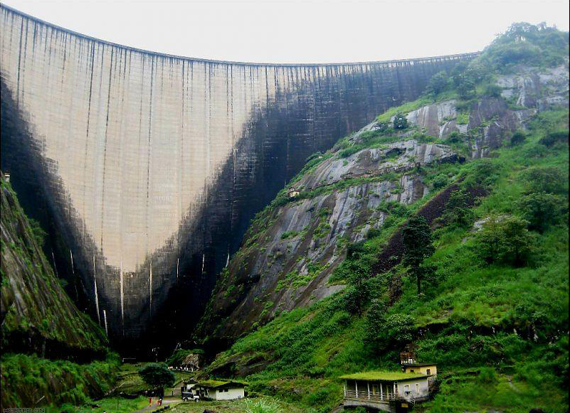

Located just about 10 km from the centre of Idukki, Painavu is a shopper's paradise. A prominent stopover to Idukki and Cheruthoni Dam, this place is famous for its local handicrafts, silk and beautiful local clothes.
Last updated 3 mins ago

Located just about a kilometre from the Idukki city centre, the Hill View Park is set up approximately 350 feet from the Idukki dam. As the name suggests, Hill View Park is one such places in Idukki that offers spectacular views of the Cheruthoni and Idukki Dams.
Last updated 3 mins ago

Situated in Kulamavu, the Kulamavu Dam is a gravity dam. The dam part of three dams dedicated to the Idukki Hydro Electric Power Plant that also encloses a manmade lake. Although quite mundane, this dam is a good place for some short sightseeing.
Last updated 3 mins ago